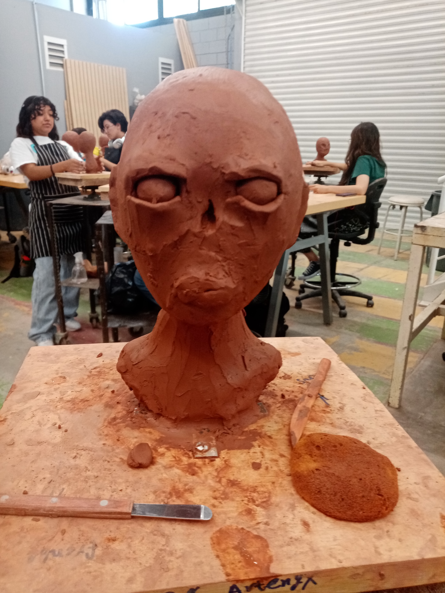

Mi Trabajo en Escultura


La escultura me permite dar vida a mis ideas a través de diferentes materiales. Cada pieza es un reflejo de mi visión artística y mi dedicación al detalle.
Volver al Portafolio